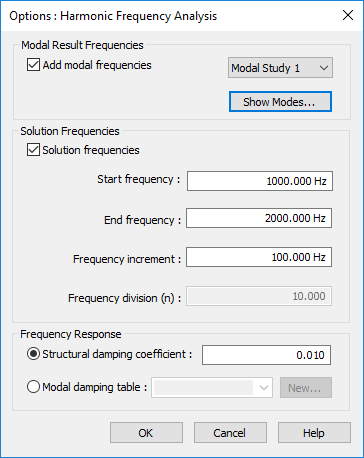
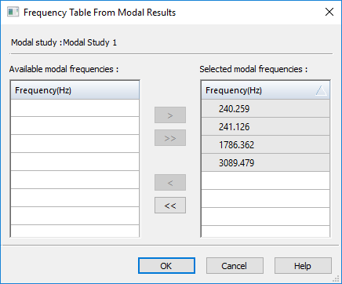

Options: Harmonic Frequency Analysis dialog box
Use the Options: Harmonic Frequency Analysis dialog box when creating or modifying a harmonic response study to define the frequency intervals at which you want to see the response of the model to the effects of vibration at specific frequencies. To learn how to use this dialog box, see Define a harmonic frequency response study.
You can save your harmonic response study definition parameters as global defaults using the Harmonic Response Options... button on the Solid Edge Options dialog box→Simulation tab.

- Modal Result Frequencies section
-
Use the options in this section when your document contains one or more previously solved normal modes studies.
- Add modal frequencies
-
Enables you to use the modal frequency results from a solved normal modes study in the current document. Select the check box, and then select the study name from the adjacent list, for example, Modal Study 1.
Note:You can select the frequencies from multiple normal modes studies in the document, and apply them to your harmonic response study.
- Show Modes...
-
Displays the modal frequencies for the currently selected normal modes study in the Frequency Table from Modal Results dialog box.
Review the Selected modal frequencies in the right column, and use the left arrow key to remove the frequencies you do not want to include in the harmonic response study to the Available modal frequencies list in the left column. You can target a specific frequency to investigate, or select a low to high range.

- Solution Frequencies section
-
Use the options in this section to specify a user-defined range of frequencies where you want to calculate the harmonic response. These can be in addition to the modal frequencies you selected from a normal modes study, for example to limit the results to a subset of those frequencies, or to expand the range beyond those frequencies. You also can use these options when prior modal frequency results do not exist.
Default units are Hz.
- Start frequency
-
Specify the lowest frequency to include in the solution.
- End frequency
-
Specify the highest frequency to include in the solution.
- Frequency increment
-
Specify how often you want frequencies to be computed.
- Frequency division (n)
-
This read-only field shows how many modal results will be produced based on your start, end, and increment input values, plus one more result set as the baseline.
- Frequency Response section
-
Use the options in this section to specify how you want to apply structural damping to account for energy that is dissipated due primarily to some type of friction. Structural damping mitigates the displacement response of a structure or design.
- Modal damping coefficient
-
Select this option to apply a constant damping ratio across all frequencies. You can use or edit the default value for the damping coefficient in the adjacent box.
- Modal damping table
-
Select this option to apply variable damping at critical vibration frequencies using a function, and then select the name of the function from the adjacent list. If no damping functions are available in the study, use the New button to create one.
- New
-
Opens the New Function dialog box for you to define a Frequency Vs. Structural Damping function, using values that are appropriate for your design. For more information, see Harmonic response studies.
How do I
Verify simulation material propertiesCreate a study
Create a study using a simplified model
Define a coupled study for thermal stress analysis
Assign units in studies
Define and review a transient heat study
Define a harmonic frequency response study
Learn more
Creating and using studiesUsing materials in studies
Modifying studies
Structural studies
Thermal studies
Using steady state heat transfer studies
Coupled studies
Harmonic response studies
Create and solve a study using GD optimized model
Create and solve a study using an STL model
Defining thermal studies
Look up more details
Create Study (or Modify Study) dialog boxTransient Heat Options dialog box